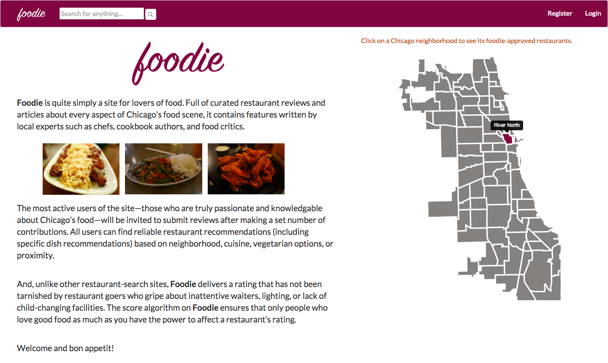
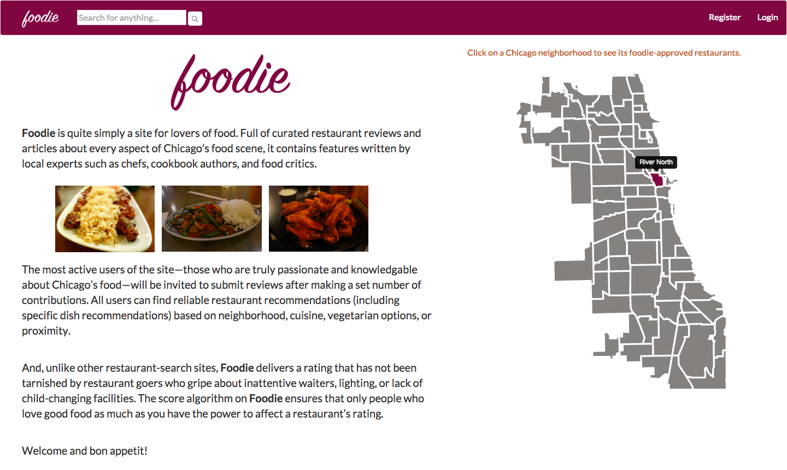

The Dev Bootcamp Onsite Experience: Part 3
October 31, 2015
We were told going into the final three-week period that there would be a lot less hand-holding than there was in the second phase. And so it was. It was as if someone had told us, “Okay, we’ve given you the foundation, now go build your masterpieces.” This professionalization effort was definitely intentional, because at the conclusion of the program, we need to feel that we are fully-fledged web developers, (very) junior web developers to be sure, but web developers all the same.
Week 7 – Rails and Much, Much More
This week was an absolute whirlwind of new technologies, and I would probably rank it just behind Week 1 in terms of overall intensity. It started with building two relatively small Rails apps in two days, followed by a march of technologies—testing within Rails using RSpec, Capybara, and more; Object-Oriented JavaScript arranged in the classic MVC design pattern; Jasmine testing within JavaScript; jQuery UI; and, finally, our first JavaScript front-end framework, Backbone.js. In retrospect, just a little bit more hand-holding might have been nice. Learning on your own is good, but learning from experts is better.
There were a couple of things I really enjoyed about this week:
1) The return of algorithms – While not discounting the art and skill required to write good, clean, modular, and well-organized code, by the time you’re building your eighth (admittedly simple and small) website over two weeks, everything becomes somewhat repetitive. Rails tries to ameliorate this situation by providing generators to handle common tasks, but that just shifts the challenge to wiring everything together properly (integrating Ruby and JavaScript, getting this or that API to talk with the server properly, setting up the various parts of the testing suite, etc.). However, there were a few exercises this week that harkened back to Week 1, exercises that required deep, logical thought to break down a complex problem. Solving these gave me a real thrill.
2) Front-end JavaScript frameworks – I’ve heard the following cliché regarding front-end JavaScript frameworks many times: “They’re not too bad to learn, after all, they have the same JavaScript at the core.” I strongly disagree. Learning a JavaScript framework is like learning an entirely new and relatively distant dialect of a language you already know. Sure, there is some overlap in vocabulary and syntactic rules, but there is also a fundamental difference in how the language is structured and how meaning gets made through its building blocks. Plus, there is the presence of plenty of specialized vocabulary that doesn’t really overlap with the standard language. And that’s why learning Backbone.js over a few days was so fun for me—not only because of the challenge of doing so, but also because the Backbone “dialect” reflects an entirely different understanding of the world in the same way that the worldview of a small, linguistically-united community is filtered through their language. This makes sense because Backbone, unlike JavaScript, was designed for one particular purpose: to modularize elements on a webpage to allow for effortless synchronization between themand maximally efficient development.
Week 8 – Client Project (Gamenight)
Though I’ve labeled Week 8 as the “client project,” that is actually somewhat of a misnomer. We (me and two other students) received our assignment around 11 am on Monday and had to present it at 3 pm on Wednesday afternoon. Our assignment was basically to build a more modern-looking version of this website. This was a hell of a sprint, made more hellish by the fact that we somewhat foolishly decided to incorporate all of the “stretch” challenges into our initial design and chose to try out a front-end HTML/CSS framework (Pure) that none of us had ever used before.
I felt our team dynamics were particularly strong during this project. We mapped out the work, split it into three slices (me: games/back-end, Alexis: users/back-end, Chris: design/front-end), and trusted each other to do a great job. And whenever someone got stuck, one of the other team members would jump in to provide a second set of eyes (and a second brain). Tuesday night was particularly epic; a true hackathon atmosphere developed between everyone who stayed past 9 pm that night. There was a giddy energy, many lines of code written (some of them were even good), and lots of unhealthy snacks consumed.
Here is the fruit of our collective labor: Gamenight. I think it turned out quite well indeed considering the time constraints. (For more details about my role in the project as well as a link to the Github repo, you can check out my projects page.)

Week 9 – Final Project (Foodie)
When I moved to Chicago about three months ago, one of the first questions I asked myself was, “Where was I going to eat?” In a city the size of Chicago, one would think that I would spoiled for choice; however, when I scoured Yelp for suggestions, I noticed that places like Taco Bell and Subway received four stars. Now don’t get me wrong, I do enjoy Taco Bell from time to time, but I wished there were a site where each and every restaurant listed catered to refined palates and where I could learn more about the local food scene.
This was the genesis of my idea for the site Foodie, which three fellow students and I built over just 8 days. Looking back after I complete my first professional project, I’m sure it will look small to me, but during the throes of the process, as this representation of our database schema perhaps demonstrates, it felt very big. As its heart the site is basically a complex CRUD (Create, Read, Update, and Delete) app; however, our team built in a lot of cool and useful features, such as smart search functionality, full integration with Google Maps (for directions and distance) optimized for both mobile and desktop, mobile-first responsive design, reputation algorithms for restaurants and users, login through social networking sites, a clickable neighborhood-based map, three different permission levels for users, filters and pagination for search results, asynchronous handling of almost every request, and an extensive CI (Continuous Integration) testing suite.
{kind=link}
As project lead, I spent a lot of time organizing the team, conceptualizing the site, setting goals, answering questions, and reviewing code. It was great to have a hand in almost everything, but, on the other hand, it was hard, especially during the first couple days, to set aside uninterrupted blocks of time to write code. Eventually, as the back end stuff started to get finished up and needed to look pretty on the front end, I had to sequester myself in order to get this work done. I also noticed that as our team started to feel the time crunch more and more, the elegance and concision of the code we produced decreased and technical debt started to accrue, which really gave me great insight into why legacy code is generally in such poor condition. The last thing that got finished on the project was the mobile verison of the landing page, which I pushed to GitHub around 2 am on Friday morning at the end of a marathon 22-hour day. Yep.
Despite the chaotic nature of the last day, I believe our group produced an excellent site, which you can visit (click here to go to Foodie). And, once again, my projects page and the GitHub repo are places where you can learn more about the site, my role in building it, and the technologies we used.
 

* * * * *
This concludes this massive, three-part blog post. Return to my main blog page by clicking here.